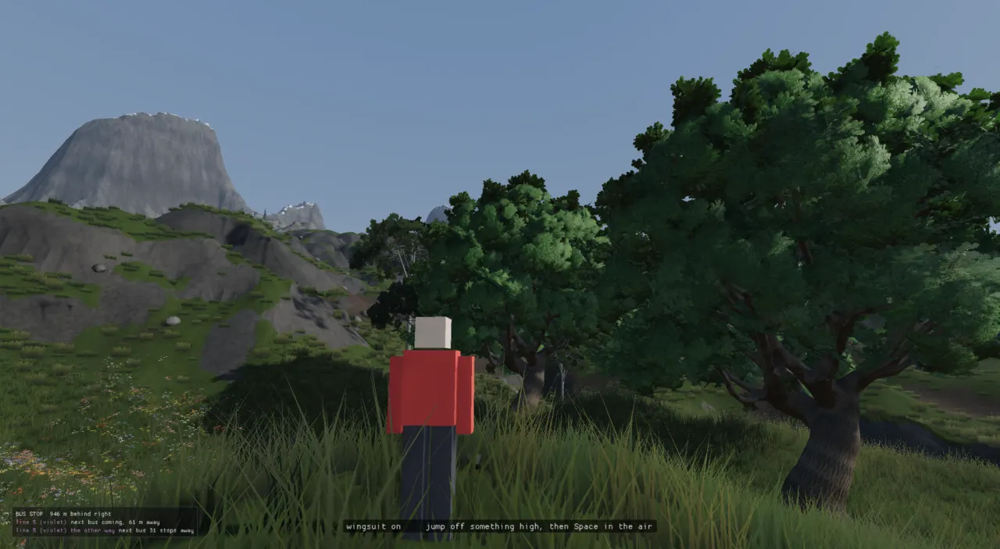
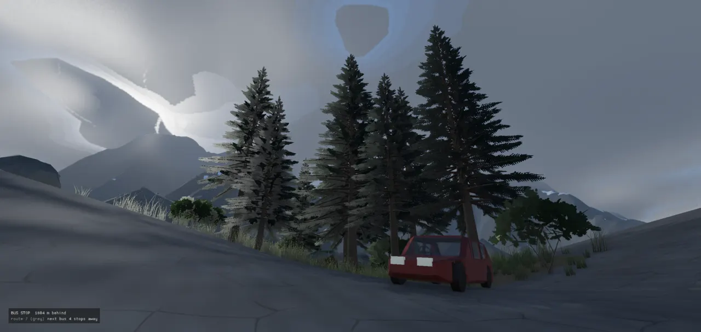
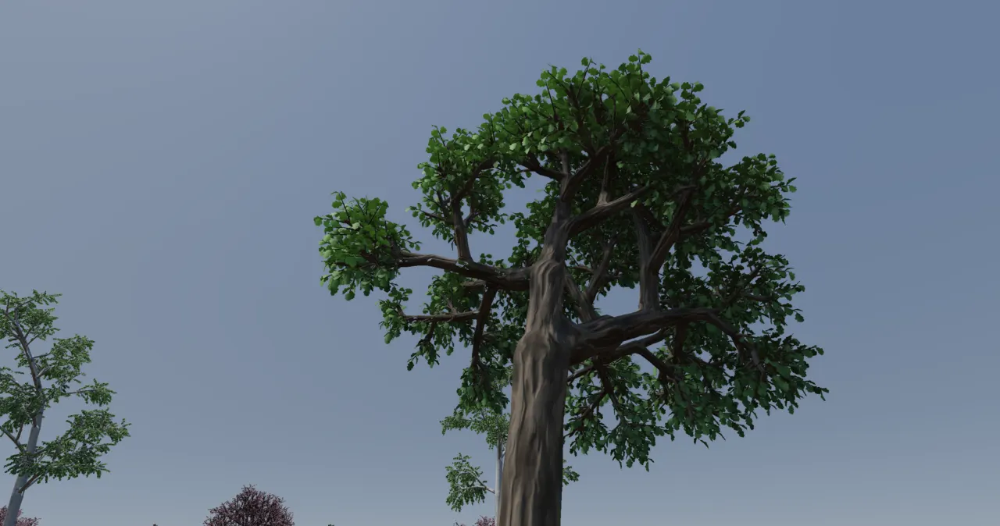
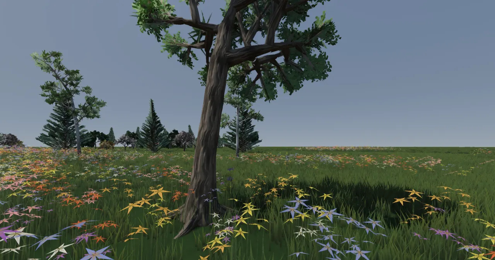
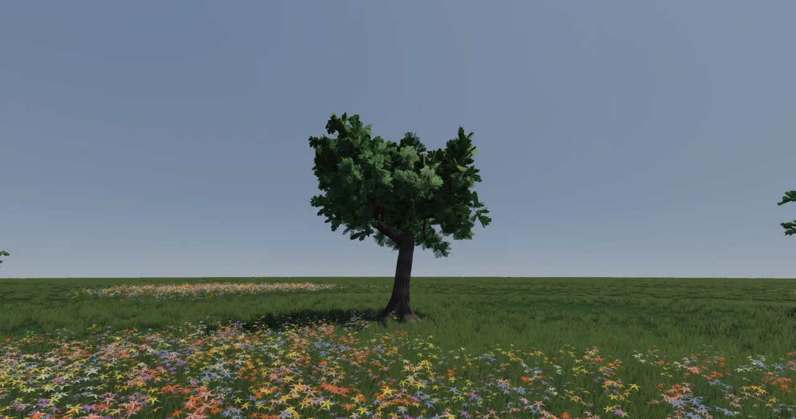
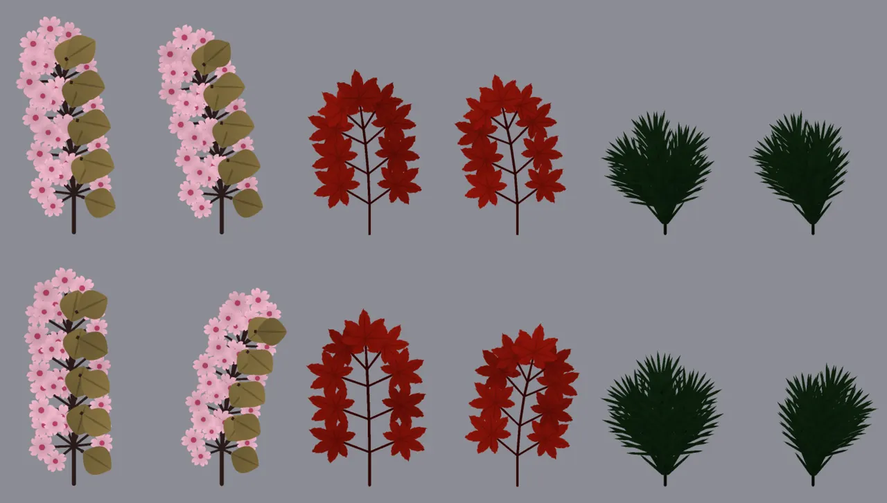
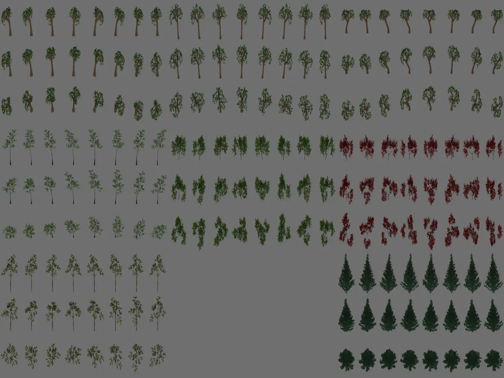
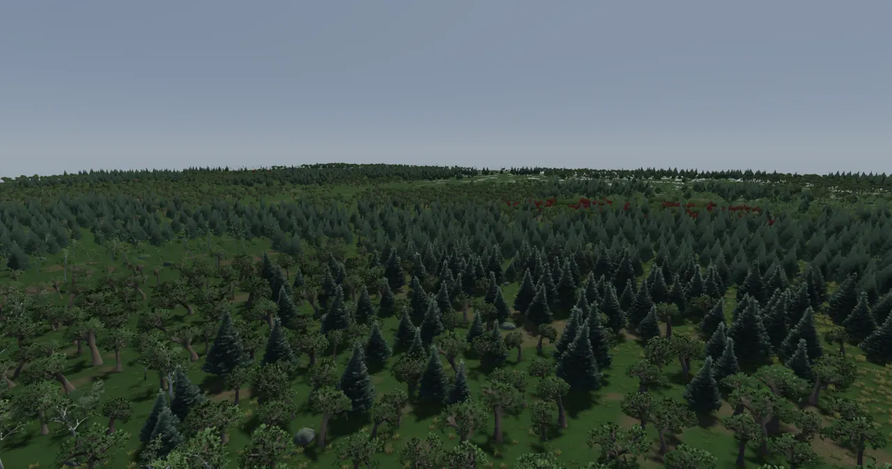

Growing trees and forests
A tree species is a Lua recipe: a small grammar plus a table of numbers, each of which may be a range the seed draws from. C++ grows the recipe into a skeleton, skins the skeleton into bark, and dresses it with leaves, then grows the same tree again three or four times, each copy coarser, so a forest can draw a full tree nearby and a picture of one far away.

The problem
A tree has to work at three scales. Up close a player walks round it, so the trunk needs to look like one piece of wood and the leaves need to look like leaves. In a forest there are hundreds of thousands of them: island 8 holds about 430,000 trees (ADR-0129), and most of those are a few pixels tall. A tree also has to be the right size beside the city's buildings and people.
The engine handles this the way production foliage tools do. It models the trunk and big limbs, replaces small branches with cards (flat textured quads), keeps several levels of detail per tree, and draws a far tree as an impostor: a single card showing a pre-rendered picture of that tree, chosen for the angle it is seen from. The engine's own twist is that every one of those pieces is grown from the same recipe and seed, including the card pictures, which are rendered from the species' own sprigs.
Two growers, one forest
There are currently two tree generators, and a forest can use both.
real_tree (ADR-0129, 0130)
Hand-written C++ growers for 17 species: 11 for the forest (spruce, fir, pine, oak, beech, birch, maple, aspen, willow, alder, shrub) and 6 city trees (two palms, monkeypod, poinciana, jacaranda, plumeria). The bark is tubes and the foliage is alpha-cut cards with a painted spray texture. They are cheap and fast to place, and they were the island's first forest.
Recipe trees (ADR-0181 onward)
Species written as data in
assets/scripts/tree_recipes.lua and grown by tree.cpp. They have joints, a trunk zone,
branch cards, ages and forms. They are the subject of most of this page.

A real_tree forest block can hand a share of each species to its recipe twin ("recipes": 0.5,
ADR-0216), so the two kinds
stand side by side in groves. This is covered further down, under Forests.
The pipeline
From recipe to drawn tree. No Lua runs per branch: Lua only supplies the numbers and the rules, and the grammar is expanded and interpreted in C++.
The grammar and the skeleton
The branching structure comes from a parametric L-system
(ADR-0030), a set of rewrite
rules applied to a string of modules a fixed number of times. A module such as B(1.2) carries numbers,
and a rule's successor can do arithmetic on them, so each branch generation can shorten (B(l*0.8)).
Rules can carry a guard (B(l):l>0.22), which lets one symbol behave differently as it shrinks.
Several rules for the same symbol are weighted random choices. The expanded string is read by a 3D
turtle: F moves forward, + - & ^ / \ turn it, and [ ] push and
pop a branch.
The turtle produces a Skeleton
(ADR-0033). It was pulled out
of tree.cpp as a domain-free value type so other generators can read it too. Mountain ridge networks
are its second consumer.
struct SkeletonNode { Vec3 pos; Vec3 heading{0, 1, 0}; // turtle forward at this node int parent = -1; // -1 = root int childCount = 0; int depth = 0; // branch order (bracket nesting; 0 = main axis) float radius = 0.0f; // filled by a consumer (e.g. the pipe model) float distFromRoot = 0.0f; bool isTip = false; // an unexpanded apex: leaf attach / ridge end / ... }; struct Skeleton { std::vector<SkeletonNode> nodes; // Child index lists per node (parent-before-child order). std::vector<std::vector<int>> childLists() const; };
The tree code relies on the parent-before-child order. Several passes walk the array backwards, so every child is
visited before its parent. The pipe model below is one of them. ADR-0033 lists exposing Skeleton to Lua
as owed, and it is still owed: the Lua bindings have no skeleton type.
A species is a recipe
Glenn asked, on 2026-10-17: "Could lua be used to define recipes and then the C++ could ingest those recipes and build out those trees?" This is the oak's recipe today, trimmed:
oak = {
-- FORM in a stand (forest.h ForestSpecies::form; the island's forests): the lower limbs shaded off, a clear bole
forms = { stand = { axiom_prefix = "F(3.0)", scale = { params = { crownRadius = 0.6, crownBottom = 2.2 } }, params = { pruneBelow = 0.45 } } },
axiom = "T(1.3,2)",
iterations = 13,
rules = {
{ "T(l,n):n>0", "F(l)/(97)T(l*0.95,n-1)" },
{ "T(l,n):n<=0", "B(l*$crown)" },
{ "B(l):l>$tip", "F(l)/($roll)[&($pitch)B(l*$side)]/(180)[&($pitch2)B(l*$side2)]", 3 },
{ "B(l):l>$tip", "F(l)/($roll)[&($pitch)B(l*$side)]^(10)B(l*$lead)", 2 },
{ "B(l):l<=$tip", "F(l)/(137.5)[&(55)A(l)]/(137.5)[&(55)A(l)]/(137.5)[&(40)A(l)]A(l)" },
},
vars = { roll = {70, 110}, pitch = {42, 58}, pitch2 = {30, 46}, side = {0.80, 0.86}, side2 = {0.76, 0.84},
lead = {0.80, 0.86}, tip = 0.22, crown = 0.9 },
params = {
joints = 1, trunkZone = 0.10, trunkZoneTris = 2800, -- (the trunk, its first limbs, its roots: one surface)
droop = {0.10, 0.20}, light = {0.15, 0.30}, crookChance = {0.15, 0.30}, crookAngle = {15, 30},
meander = {0.08, 0.15}, lean = {0, 6}, angleJitter = {8, 14},
-- ...
},
How to read it: T is the trunk, which grows two stretches and then becomes B, a limb.
While a limb is longer than $tip it forks, either into two sides (weight 3) or into one side plus a
continuing leader (weight 2). Once it is short enough it ends in four tips (A), and that is where
leaves go. vars are the grammar's own numbers, and each $name is substituted per seed
before the grammar is compiled. params are the grower's knobs (TreeParams fields, looked up
by name). Any number written as {lo, hi} is drawn per seed, so one recipe defines a species and each
seed gives a different tree of it.
The C++ side is short. Ages, forms and level overrides are applied first, and then it is the grammar and the skin:
TreeMesh growRecipeTree(const TreeRecipe& r, uint32_t seed, const std::map<std::string, double>& overrides) { // ... std::map<std::string, double> vars; TreeParams p = drawTreeParams(r, seed, &vars); for (const auto& [name, v] : overrides) if (!setTreeParam(p, name, v)) vars[name] = v; // (a var's name: the lab may pin a grammar number too) // ... if (r.rules.empty()) return growTree(p, seed); ParametricLSystem grammar; for (const TreeRecipe::Rule& rule : r.rules) grammar.rule(substituteVars(rule.predecessor, vars), substituteVars(rule.successor, vars), rule.weight); const ModuleString axiom = parseModuleLiterals(substituteVars(r.axiom, vars)); const ModuleString s = grammar.expand(axiom, p.iterations, seed); return skinTree(s, p, seed); }
The reader (scripting/tree_recipes_lua.cpp) rejects an unknown parameter name or a $name
with no value, so a typo cannot silently grow a default tree (test tree_recipe_reader_rejects_typos).
The file is re-parsed only when its text changes, and the tree lab watches it, so editing a recipe reloads the
lab.
The shipped book holds 22 species written out in full, among them oak, birch, spruce, sakura, maple, pine, three
palms, shrubs, flowering perennials, a hedge and blade plants (flax, rush, fescue). Four more are
derived with a small Lua derive(kin, over) helper: beech from the oak, silver fir from the
spruce, and aspen and alder from the birch (ADR-0199). A derived species is a copy of its kin with a table merged
over it, so it shares the kin's grammar, ages and forms.
The structure
The main types. A level never sees a TreeRecipe directly: it asks for a recipe at an age
and a form, and gets back its levels.
From skeleton to wood
Radii by the pipe model
Branch thickness is not authored. It follows the pipe model (da Vinci's rule, or Murray's law): a limb's
cross-section carries everything above it, so rparentn = Σ
rchildn with n around 2.3
(ADR-0029). Because tips
are thin and the trunk carries them all, the trunk's girth depends on how many twigs the tree has. That is why the
ages set girth separately with radiusScale.
void assignRadii(std::vector<SkeletonNode>& nodes, const TreeParams& p) { std::vector<float> sumPow(nodes.size(), 0.0f); const float n = p.pipeExponent; for (int i = static_cast<int>(nodes.size()) - 1; i >= 0; i--) { float r = nodes[i].childCount == 0 ? p.tipRadius : std::pow(sumPow[i], 1.0f / n); r *= p.radiusScale; if (r < p.tipRadius * p.radiusScale) r = p.tipRadius * p.radiusScale; nodes[i].radius = r; if (nodes[i].parent >= 0) sumPow[nodes[i].parent] += std::pow(r / p.radiusScale, n); } }
skinTree runs the passes in a fixed order. The crown is grown after the scaffold has been bent,
because bending walks down whole chains of nodes, and when it ran after colonization it twisted the grown limbs off
their clumps:
TreeMesh skinTree(const ModuleString& s, const TreeParams& params, uint32_t seed) { std::mt19937 rng(seed); Skeleton skel = buildSkeleton(s, params.angleJitter, rng); std::vector<SkeletonNode>& nodes = skel.nodes; // (the crown grown to its shape AFTER the scaffold is bent and gnarled -- bending runs down whole chains, and the // grown limbs and fans, bent again, sagged and twisted off their clumps -- then the radii, by the pipe model, over // all of it) std::vector<TreeMesh::Lobe> lobes; assignRadii(nodes, params); shapeBranches(nodes, params, rng, seed); if (params.colonize >= 1) { colonizeCrown(nodes, params, seed, &lobes); assignRadii(nodes, params); }
After these passes come the lean, the clip box (hedges), and the crowded-fork stagger. Where more than two limbs of wood leave one node, every side limb after the first is moved up the leader, three radii apart, so each fork has two limbs. This took the maple's crowded forks from 140 to 28 and the pine's from 34 to 0 (ADR-0182).
The bark: tubes, then joints, then the trunk zone
Each limb is a generalized cylinder (ADR-0029): a ring of vertices swept along a Catmull-Rom curve through the limb's chain of nodes, using rotation-minimizing frames (the frame is carried along the curve with as little twist as possible) so the bark texture does not spiral. The gnarl knobs then deform it: crooks, meander, flare, flutes (lobes), node swell, knots and grain twist. They all default to 0, so older trees are unchanged.
Where limbs meet is the hard part, and it took three attempts.
| Attempt | What it did | Why it changed |
|---|---|---|
| Collar weld | A side branch starts on its parent's surface and flares into it
(collar). | Glenn, 2026-10-17: "I can see the seams between the branches and looking at them in wireframe it's obviously not one continuous structure." |
| Hull joints (ADR-0181) | Every limb at a fork is cut back until its end ring is clear of the others. The rings are joined by their convex hull, refined, and projected onto the limbs' smooth union. This is the road-junction method: cut back, then fill. | Bark triangles doubled (the oak went from 34k to 80k), and narrow forks still webbed. Glenn: "there are a lot of bad joins ... probably the way I suggested is not right". |
| Trunk zone (ADR-0183) | The trunk, its first limbs and the roots become one implicit surface: tapered capsules, smooth-unioned and polygonized, then simplified and remeshed into even triangles. Thinner limbs are tubes that flare into it. | This is current. The oak's zone is 2.2-3.1k triangles with 0% slivers. |


The research note in ADR-0183 explains the turn. Production game trees do not weld branches. SpeedTree overlaps
them and hides the seam with a blend ring and bent normals. So the engine builds one true surface only where it
matters, at the trunk, and blends the bark across every seam. Each zone vertex carries a second UV (the bark mapping
of the nearest limb of another chain) and a blend weight, packed into the tangent slot. mesh.frag
samples the bark at both UVs when RenderMaterial::FLAG_UV_BLEND (bit 23) is set. This is Vulkan
only.
The meshing chain is made of shared words. The zone added
polygonizeSdfSparse (meshes only the blocks of cells near the surface; a dense grid of the trunk is
~18M samples), plus MeshBuilder::splitNonManifold, fillHoles, simplify
(quadric edge collapse) and remesh (isotropic, after Botsch & Kobbelt). Glenn's "those triangles
look really stretched" is why the remesh step exists. Grid-accelerating the field took polygonizing from 2.0 s to
0.3-0.5 s per zone (ADR-0183 addendum).
Crowns: grown to a shape
Young trees grow their whole crown from the grammar. Old trees could not. Grammar branching made an ancient oak a
tangle of crossing limbs, and Glenn's call was "we should skip the tangle of branches for an ancient oak. I would
expect more plumage and foliage". It took three crown modes (TreeParams::colonize) to settle it.
- colonize = 1, space colonization (ADR-0187; Runions, Lane & Prusinkiewicz 2007). The grammar grows only a scaffold: the trunk and a few big limbs. Thousands of attraction points are scattered in a dome around it, mostly in its outer shell. At each step, every node that is the nearest node to some live points grows one step toward their mean, and any point a node comes close to is spent. Branches therefore compete for room and do not cross. Glenn's verdict: shapeless.
- colonize = 2, lobes (ADR-0188). The crown's shape is authored (
crownRadius,crownBottom,crownTop) and covered with lobes. Each lobe is colonized only from its own anchor limb. Glenn: "Those look messy." - colonize = 3, guided limbs (the oak's mode now). Each lobe gets ONE smooth cubic limb from the scaffold node best aimed at it, plus a fan of shoots inside the lobe. Glenn: "that's better".
for (const auto& [key, sum] : pull) { const int ni = key.first; const SkeletonNode& from = nodes[static_cast<std::size_t>(ni)]; Vec3 dir = sum * (1.0 / count[key]); dir = dir + Vec3(0, 0.12, 0); // (a lift to the light) if (dir.length() < 1e-6) continue; dir = normalize(dir); SkeletonNode n; n.pos = from.pos + dir * D; n.heading = dir; n.parent = ni; n.depth = from.depth + 1; n.distFromRoot = from.distFromRoot + static_cast<float>(D); n.isTip = true; nodes[static_cast<std::size_t>(ni)].isTip = false; nodes.push_back(n);
Mode 3 returns before this loop. It builds its limbs and fans directly, which gives a clear hierarchy: trunk, big
limbs, one limb per clump, and that clump's twigs. A lobed crown is then covered with sprays (ADR-0189), big
fanned cards 1.2-2.2 m long laid over each lobe's outer face, so the lobes read as rounded masses of leaves.
Glenn's request was "those clumps need to be made puffier". ADR-0190 adds an edge-on fade in
mesh.frag: a card thins away as the view grazes its true face, which is computed from screen-space
derivatives because the vertex normals are bent out of the crown. Each spray plane is also domed. Glenn declined a
third crossed plane per card, which would have cost 50% more foliage triangles.

Foliage
Leaf cards drawn by a grammar
A recipe's card is a second, 2D L-system: F draws a stem, L(s) draws a leaf
of the recipe's shape (oval, lobed, serrate, needle, leaflet or palmate), and W(s) draws a flower
(blossom, daisy or floret). leaf_card.cpp rasterizes it into an albedo and normal atlas. The card
colour is brightness times tint, and the tree's vertex colour multiplies that, so one atlas can be worn by trees of
different colours.

Branch cards, and three foliage tiers
Modelling every twig is expensive. Measured fully modelled, a tree came to 40-120k bark triangles and 80-230k leaf
triangles. Glenn set the budget: "for a hero tree ... the upper budget to be about 8000 triangles and no more". The
answer is branch cards (ADR-0182). A side shoot whose whole spread fits inside sprigSize metres
is a sprig, and its wood is not built. Note that this cuts by spread, not by thickness: at a fixed radius
the oak's sprigs were 0.4 m and the sakura's 1.3 m. The same tree is grown again as a donor with every
sprig built whole, a few of those sprigs are rendered into an atlas, and each sprig on the real tree wears the
nearest picture in size.
Glenn rejected pictures of whole sprigs ("Those look like small trees"), so species with near leaves now use three tiers (ADR-0184):
| Tier | What a tree wears | Code |
|---|---|---|
| Near (hero) | Twigs as three-sided bark tubes in the trunk's own mesh. About 6000 normal-mapped leaves
placed one by one along twigs and shoots (near_leaves), plus cupped blossoms. |
wearNearLeaves |
| Mid | Twig segment cards: leafy, leafy Y, bare and bare Y, wearing the species' bark and leaf maps, laid along the fine branching. | bakeTwigCards, wearTwigCards |
| Far | Impostors (below). | renderImpostorView |
Conifers get their own kit (ADR-0185, 0191). needles = {kind = brush | flat | tuft} draws needle
shoots from actual needle geometry, and fronds (whole needled sub-branches about 0.55 m long) fill the space
between whorls that made the spruce look see-through. Palms use a frond crown, and since ADR-0218 a crownshaft.
The maple got one leaf palette per tree at every level (ADR-0192), so it no longer turns into patches of
crimson and orange as the player walks away. Tree textures are also uploaded once, keyed by content: the lab held
2197 textures (4.9 GB) before and 128 (304 MB) after.
Ages, forms and real scale
A recipe's ages table (ADR-0186) gives young, mature, old and ancient overrides: an axiom,
iterations, params, vars and branch-card budgets, laid over the base recipe by agedRecipe. An older
oak does not just get more iterations. Its branching stops at a longer $tip and its trunk's first
stretch is longer, so it is a few branching orders bigger rather than thousands of twigs bigger. A longer first
stretch alone gave 17,000 twigs and a 5 m trunk. deadChance adds snapped grey stubs.
Then Glenn checked the trees against the city: "the trees need to be 2x to 4x taller than me". The recipe trees
had defaulted to 6-10 m, while a real oak or spruce is about three times that. scale_lab.json puts a
street of the city's own things (a house, buildings of 4, 6 and 8 storeys, a sedan, a lamp, walkers and a pole
banded every metre) beside rows of trees, and the ages were rebased on real sizes (ADR-0196):
| Species | young | mature | old | ancient |
|---|---|---|---|---|
| Oak | 10 m | 21 m (grown crown) | 25 × 31 m | 28 × 38 m |
| Spruce | 9.5 m | 25.6 m | 34 m | 40 m |
Forms (ADR-0199) are laid over after the age, and they can scale numbers as well as set them, so one
form fits every age. stand is a forest-grown tree: a clear bole (an axiom_prefix such as
F(3.0) before the trunk), lower side limbs shaded off (pruneBelow), and a narrower, higher
crown. Test a_stand_grown_tree_has_a_clear_bole measures it: the oak's lowest leaves go from 3.1 m to
5.9 m, and the spruce's from 0 to 3.4 m.
Levels of detail
growRecipeLevels grows one recipe and seed as up to four trees with the same skeleton (same seed, same
draw), each coarser than the last. Each level is drawn over its own band of distance and crossfaded into the next
one per pixel, using a Bayer screen-door dither (RenderMaterial::FLAG_LOD_BAND, bit 19). Glenn's
spec, 2026-10-17: "hero trees have everything wielded. And then mid level doesn't have to wield them all and then
furthest would be cards".
The bands one recipe species gets in recipe_forest. Gradients are the crossfades: each level fades out over the same metres the next one fades in. The city's street trees use their own bands (hero 18-24 m, mid 50-60, light 110-130), and the old real_tree forest draws models to 150 m and impostors to 7 km.
struct RecipeTreeLevel { TreeMesh tree; LeafCardAtlas atlas; // its leaves' picture (recipeLeafAtlas) float in0 = 0, in1 = 0, out0 = 0, out1 = 0; // fade in over [in0, in1], out over [out0, out1] (0, 0: no fade) double minDistance = 0, maxDistance = 0; // culled nearer / farther (0: not) }; struct RecipeLodBands { double hero0 = 24.0, hero1 = 30.0; // hero -> mid (both 0: no hero level) double mid0 = 0.0, mid1 = 0.0; // mid -> light (both 0: no light level, the mid is the last) double light0 = 0.0, light1 = 0.0; // light -> far (leafLod 6, no limb under 7 cm, four sides; both 0: none) };
For a branch-card species, each level is the same recipe grown with different overrides: sides about
woodEdge apart, a ring every ringAngle of bend, with or without joints and roots, and a
minimum wood radius:
out.push_back(level(bc.woodEdge, bc.ringAngle, true, true, 0.0, 1.0, true)); // hero if (bands.hero1 > bands.hero0) { RecipeTreeLevel M = level(bc.woodEdge * 1.6, bc.ringAngle * 1.5, true, true, 0.0, 0.3); // mid fadeInto(M, bands.hero0, bands.hero1); } if (bands.mid1 > bands.mid0) { RecipeTreeLevel Lt = level(bc.woodEdge * 2.5, bc.ringAngle * 2.0, false, false, 0.0); // light fadeInto(Lt, bands.mid0, bands.mid1); if (bands.light1 > bands.light0) { RecipeTreeLevel F = level(0.25, 30.0, false, false, 0.06); // far fadeInto(F, bands.light0, bands.light1); } }
The loader turns each level into an instanced bark draw and an instanced leaf draw, each banded by its own fades:
auto band = [&](RenderMaterial& m) { m.flags |= RenderMaterial::FLAG_LOD_BAND; m.lodIn0 = L.in0; m.lodIn1 = L.in1; m.lodOut0 = last ? static_cast<float>(lastOut0) : L.out0; m.lodOut1 = last ? static_cast<float>(lastOut1) : L.out1; };
The forest's weight (ADR-0195). Glenn on recipe_forest: "the forest seems pretty
heavy. The fps is around 27". The test a_forests_levels_lighten_with_distance counted the rings: about
50 hero trees, 460 mid, 1840 light and 5800 far, which came to about 120M triangles a frame, mostly conifer needle
cards at the light and far levels. The fixes were to start the impostors at 150 m instead of 280 m, and to cut the
needle-card share by level from 0.9/0.6/0.35 to 0.55/0.25/0.12. The "Treetops" pose went from 36.7 ms to 10.8 ms
of GPU time. ADR-0198 did the same for grown crowns, whose mid, light and far levels had each worn 85k leaf
triangles: clusters now thin 4/2/1/1 and sprays 1/0.55/0.3/0.15 by level.
Far trees: many-view impostors
Past the last level, a tree is one quad. ADR-0193 renders each variant on the CPU from 8 azimuths × 3 elevations
(0°, 35°, 70°) into one atlas, with colour and normals, all framed in the same window around the tree's centre.
mesh.vert turns the card to face the camera. mesh.frag works out the camera's direction in
the tree's frame and blends the four nearest views, sampling each where the fragment would fall in that view, so the
silhouettes stay registered. A card that faces the camera cannot cast a sensible shadow, so two
FLAG_SHADOW_ONLY crossed cards cast it instead.

RT_IMPOSTOR_DUMP): one block per variant, with azimuths across
and elevations down.
Against a low sun the impostors read flat and bright. Glenn: "far away tree cards don't seem to render well against
the sunlight". ADR-0202 stores the depth of each view's nearest leaves in the normal atlas's alpha channel, and the
shader shades the card by how deep its point lies under the leaves the sun sees first. That makes the impostor its
own shadow map. Depth reads stop at mip 2, because below that the cells blur together and every far tree reads as
lit. A/B switches: RT_IMPOSTOR_VIEWS=0 and RT_IMPOSTOR_SELF_SHADOW=0.
Forests
A forest is a "forest" block inside the terrain block, because the ground cover reads it to lay leaf
litter under the canopy. placeForest evaluates a density field on a jittered grid at the stand
spacing. The density is a product of factors from the ground: stands and clearings (a slow noise), soil and scree
from the terrain maps, the shore, a wandering treeline, slope, and the cover's rock, sand and snow. The test that
rejects a point with no ground runs first, which is part of why 743k trees placed in 2.5 s (ADR-0129). The species
at each point is picked by altitude band and weight, with a patchy noise per species so stands form instead of a
random mix.
Regions (ADR-0203)
A ragged disc that reweights species and lets the ones it names grow lower than their usual band. The first is a spruce and pine wood in the foothills east of Saltwood.
The census (ADR-0203)
[forest] census: in the load log, plus
RT_FOREST_DUMP and RT_FOREST_WHY. Before regions, oak, maple and beech were 97% of about
200k canopy trees: above 200 m the island is crag.
Stands by density (ADR-0200)
formByDensity grows each species both ways. A tree
takes the stand form as the forest thickens around it (0.30 → 0.65), so a lone tree in a meadow is not a
lollipop.
Mixed with real_tree (ADR-0216)
"recipes": 0.5: each kind keeps every tree
where it stood, and a recipe twin takes that share in groves about 50 m across. The test measured 0 trees moved
and shares of 0.41/0.40/0.39 against 0.4 asked.

The tree cache
Growing is slow. The mature oak takes about 7.5 s per variant, and the island's recipe forest took 107 s to grow.
tree_cache.h writes a species' variants, all their levels (meshes packed by the bundle codecs, atlases,
bands and limbs), to one file under cache/trees. With the cache the forest loads in 46 s
(ADR-0198).
constexpr uint32_t kTreeCacheVersion = 1; // bump when the growers change between commits // The key: the recipe file (its path, hashed by content), what the loader asks for. 0: no cache (RT_TREE_CACHE=0, or // the file unreadable). uint64_t recipeSpeciesKey(const std::string& recipeFile, const std::string& recipe, const std::string& age, const std::vector<uint32_t>& seeds, const RecipeLodBands& bands); std::string treeCacheDir(); // cache/trees (RT_TREE_CACHE_DIR) // Read / write a species' variants' levels. Read: false (and `out` untouched) on a miss or a file it cannot read. bool loadRecipeSpecies(uint64_t key, std::vector<std::vector<RecipeTreeLevel>>& out); bool saveRecipeSpecies(uint64_t key, const std::vector<std::vector<RecipeTreeLevel>>& variants);
The key also folds in the engine's build identity (bundle::engineIdentity().version, which ADR-0198
describes as the build's git describe), so every commit is a new key and a changed grower never serves an
old tree. The trade-off is that any commit invalidates the whole cache. A write prunes the least recently used
files beyond RT_TREE_CACHE_MAX_GB (default 4). The forest's age and form for each variant go into the
age string.
City trees
Street trees and park trees can also be recipes (ADR-0200). cityRecipeKits grows a recipe at an age
with the city's bands, through the same recipeTreeParts path the forest uses, and from the same tree
cache. Street trees use the oak and beech at young age (about 10 m, three storeys), the maple and the coconut palm.
Parks get a mix. ADR-0201 filled out the young broadleaves, which had looked like tufts on bare forks, and
ADR-0218 added the royal palm and made the switch a level setting: citysim.recipeTrees, with
RT_STREET_RECIPES=1/0 to override it for an A/B. Kinds with no recipe yet (monkeypod, poinciana,
jacaranda, plumeria) stay real_tree.
Tools and labs
- tree_lab.json: rows of seeds per species, ages at z −110 (oak), −150 (spruce) and −195 (sakura). Entities
are
shape:"tree"with{"recipe", "seed", "age"}. The recipe file hot-reloads. - recipe_forest.json: a recipe-only forest for performance work. Measure with
RT_GPU_TIMES=1 RT_VSYNC=0, holding one pose. - scale_lab.json: trees beside the city's buildings, cars and people.
tools/rt_trees OUT [variants]: the real_tree gallery. It writes every real_tree species' side and top impostor pictures and its foliage texture as raw RGBA, plus triangle counts inmeta.txt. It does not cover recipe trees.
Where to look
- assets/scripts/tree_recipes.lua — every species, its ages, forms, cards and needles
- src/engine/procgen/tree_recipe.h — TreeRecipe, TreeAge, agedRecipe, formedRecipe, growRecipeTree
- src/engine/scripting/tree_recipes_lua.cpp — the Lua reader
- src/engine/procgen/tree.h / tree.cpp — TreeParams, TreeMesh, skinTree, the pipe model, gnarl, joints, trunk zone, colonizeCrown
- src/engine/procgen/skeleton.h, lsystem.h — the turtle and the parametric L-system
- src/engine/procgen/branch_cards.h — sprig cards, twig segments, near leaves, needles
- leaf_card.h, foliage_kit.h — the card grammar; sprays, leaf kit, fronds, blades
- src/engine/procgen/tree_lods.h — growRecipeLevels and the bands
- src/engine/procgen/tree_cache.h — cache/trees
- src/engine/procgen/forest.h — placement, species, regions, impostor cards
- src/engine/procgen/real_tree.h — the hand-written growers, renderImpostorView, renderCardView
- src/engine/level_loader.cpp — loadForest, recipeTreeParts, cityRecipeKits
- tools/rt_trees.cpp — the real_tree gallery
- tests/test_tree_recipe.cpp — 24 cases, e.g.
a_card_trees_wood_is_held_to_budget_and_wears_its_sprigs,a_trees_trunk_zone_is_one_closed_surface,a_forests_levels_lighten_with_distance; test_scatter.cpp for impostor views, regions and the mixed forest
| Switch | What it does |
|---|---|
RT_FOREST_RECIPES=1 / 0.5 / 0 | Grow a real_tree forest's kinds as recipes, a share of them, or none |
RT_FOREST_RECIPE_AGE | Pin one age for a recipes forest |
RT_STREET_RECIPES=1 / 0 | City street and park trees as recipes (over citysim.recipeTrees) |
RT_TREE_CACHE=0, RT_TREE_CACHE_MAX_GB, RT_TREE_CACHE_DIR | The tree cache |
RT_IMPOSTOR_VIEWS=0, RT_IMPOSTOR_SELF_SHADOW=0, RT_IMPOSTOR_DUMP=path.png | Impostor A/Bs and the atlas dump |
RT_FOREST_DUMP=path, RT_FOREST_WHY=1 | Every tree as x z alt species; density factors per 100 m of altitude |
RT_TREE_WIRE=dir, RT_JOINT_TREES=name:seed, RT_TIDY_DUMP | Test-side renders of joints, zones and skeletons |
RT_CARD_ATLAS | Test-side: dump a branch-card atlas with a lit preview |